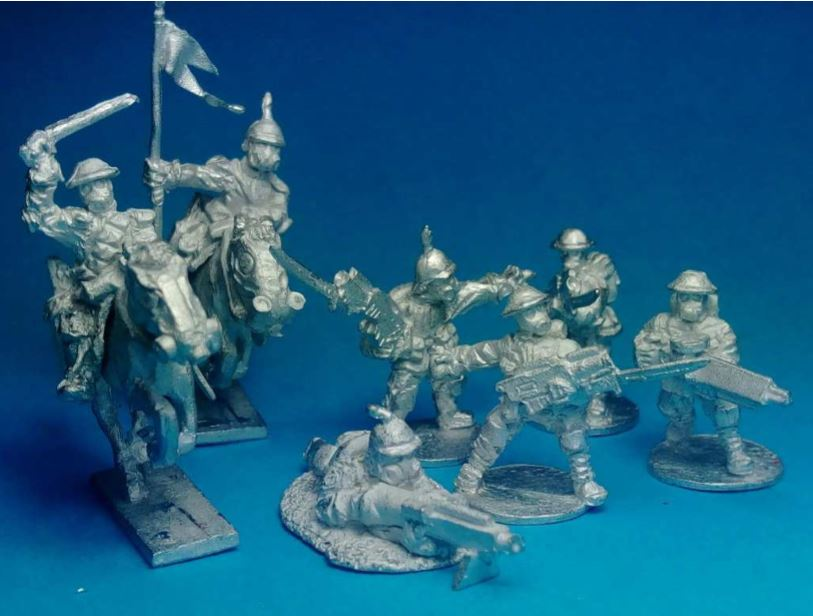
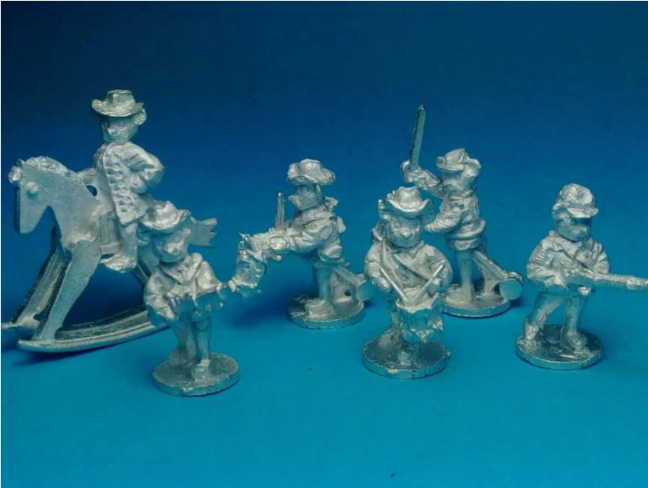
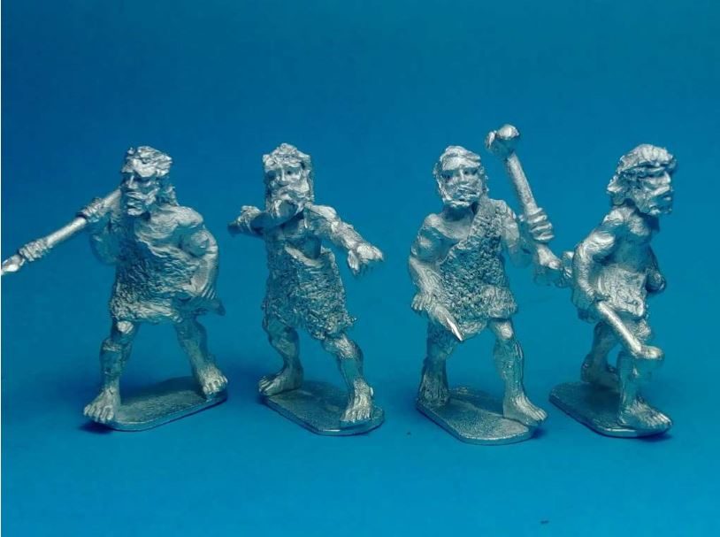
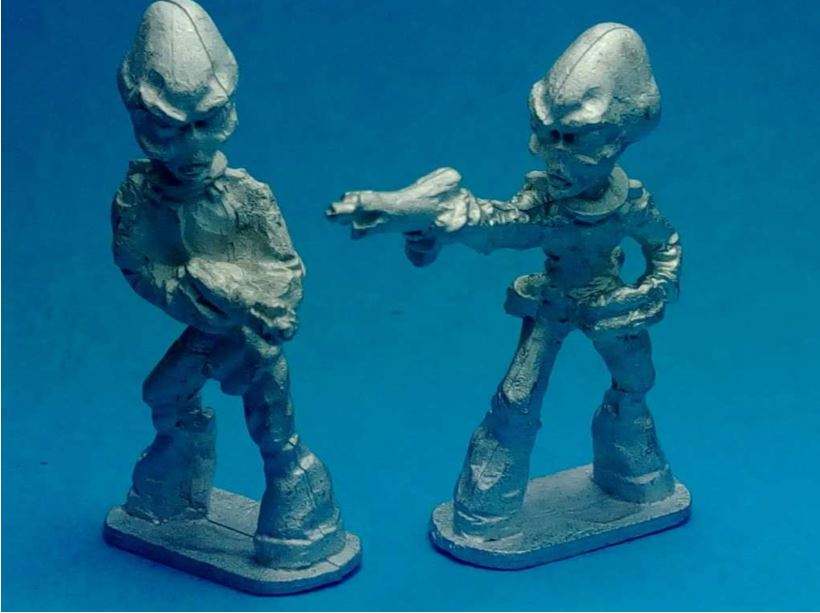
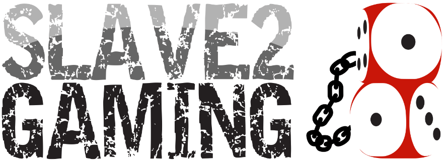

Slave2Gaming was formed in 2015. They are a small business based in Wollongong in Sydney’s south. Their idea is to provide customers with a different style of miniatures and service. They are also selling Mike Broadbent designed miniatures in varying scales and ranges. Their future plans include a range of 3D printed, resin cast 18mm scale tanks for the British and Prussian lines of the Dark World war range.
They have been kind enough to send us some of their miniatures to check out. This included miniatures from their forthcoming, Battle of Teddysburg range, Aliens and Neanderthals as well as a few other bits and pieces.

The only exposure I’ve had to any miniatures less than 28mm “heroic” scale was a stint playing Epic and Adeptus Titanicus years ago. Those 6mm miniatures were something else!
I wasn’t quite sure what to expect from Slave2Gaming’s figures.
I was properly impressed by the first figures I unpacked. I would have thought that the 18mm scale would hinder details, however, the miniatures are crisp and the detail is great on the sculpts. There were only minimal mould lines that had to be trimmed away and small details like gas masks, guns, backpacks and grenades are all clearly discernible.
There is a mix of British and Prussian troops. I had a problem telling them apart at first until I was reminded that the Prussian Troops have spikes on their heads. My favourite miniature is definitely the prone machine gunner. It’s a great sculpt and you can easily imagine lying down a line of them to mow down the charging British troops.
One thing I did learn about the scale is that swords and banners and other fine details are less flexible than in a larger scale. All it meant was that I had to be more careful as I unpacked them and cleaned them up in preparation for painting (eventually) and when I store them to minimise damage.

When the family goes to sleep and all the lights go out, many people believe that this is the time when bad things come out of the closet or out from under the bed. Maybe this is true, but what we know is that the Teddy Bears get out and recreate battles. They don’t kill each other, they dress up and re-enact war! Teddys don’t fight wars. Teddys re-enact.
This is the American Civil Paw! Another learning experience for me! This time, the Battle for Teddysburg. The idea behind the range of figures and also the Battle for Teddysburg rules is historical re-enactment of the American Civil War. Fought between Teddy Bears.
Seriousness level? About a two. And that’s my favourite thing about it. The rules are streamlined towards fun and the miniatures are tiny Teddy Bears dressed up in historically accurate uniforms typical of the American Civil War.
You can see above some of the miniatures from the range.
These are, like the Dark World War figures, crisp and clean. I made a point of not cleaning them up too much to illustrate that even the most well cast miniatures will still have some flash leftover. In this case, the Teddy Bear mounted on the Horsey. There’s a bit of flash between the back foot and the Horsey. It’s not a lot, and is short work with a sharp scalpel. It’s also in a place where it is unlikely to be noticed if mistakes are made.
Beyond the miniatures, the rules are simple and straight forward. The rules manual on DriveThruRPG is only twenty-five pages long. This keeps well within Slave2Gaming’s promise of not overly complicating things.

Okay. These ones are a bit more up my alley. The 28mm Cavemen are straight out of the Stone Age! Sculpted by Mike Broadbent, these maintain the standard that I’ve come to expect from the Slave2Gaming range: crisp, clear and minimal flash and mould lines.

Aliens! The truth is out there! Stories of abductions, probings and strange alien/human hybrids are the stuff of everything to Saturday morning cartoons, a whole genre of books and blockbuster movies. Now you can assemble your own force of Visitors!
The ones that I received have some minor mould lines that can easily be cleaned off with the scalpel and file.
Final Thoughts Slave2Gaming are an Australian producer of fine quality metal miniatures. Their range is diverse, but well produced. The Battle for Teddysburg rules supported by the characterful miniatures is really tempting me to more historical gaming. I wouldn’t hesitate checking them out.

Check out Slave2Gaming for more